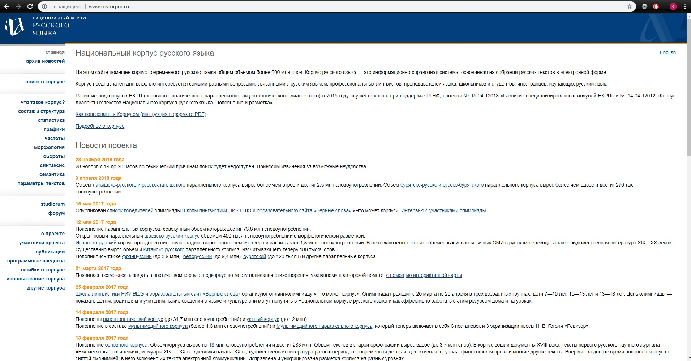

♡ Все обо мне ♡
✑ФИО
Цурик Софья Михайловна
✑Место учебы
Национально Исследовательский Университет Высшая Школа Экономики
✑Научные интересы:
| Русская и зарубежная литература 19 века |
|---|
| Поэтика Д. Хармса |
|---|
| Психология межличностных отношений |
|---|
| Идиоматика английского языка |
|---|
✑Профессиональные навыки:
аккуратность, гибкость мышления, знание иностранных языков (английский, французский),опыт работы с детьми, ответственность.
✑О себе:
учусь на филологическом факультете, увлекаюсь творчеством(рисование, вышивка), ненавижу все виды спорта кроме фигурного катания
❀Как современные технологии могут помочь филологу
В 21 веке без технологий обходятся разве что пещерные люди. Филологам могут пригодиться электронные библиотеки и онлайн каталоги; многие исследователи успешно пользуются программами по оцифровке печатных текстов. Как филолог, могу подтвердить, что сама часто обращаюсь к электронным словарям и корпусам.Помогите, я что-то нажала и теперь у меня мигает нижнее подчеркивание и усложняет жизнь несчастной филологине, а еще оно удаляет весь текст справа.

Во-первых, на заглавной странице отображаются новости(?), что очень актуально, ведь последняя из них датирована 28.11.18. Во-вторых, нет понятной кнопки поиск. Когда я в первый раз зашла на сайт для выполнения дз по языкознанию, я ничего не поняла и не сделала домашку))). При попытке воспользоваться инструкцией открывается файл на 84 страницы, который я конечно же не буду читать. Из достоинств сайта можно отметить читабельный шрифт и стильный синий баннер и иконку нкря. Вывод: сайт делали заумные лентяи.
Special thanks to: мой брат, чьим компьютером я воспользовалась; тот же брат, у которого установлен Sublime Text; и опять брат за то что не мешал☺